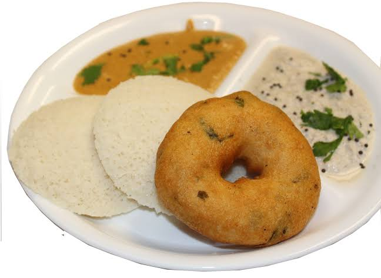
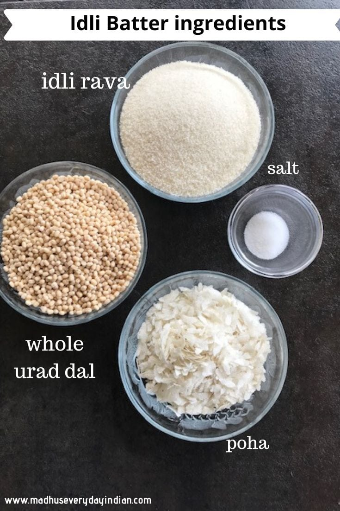
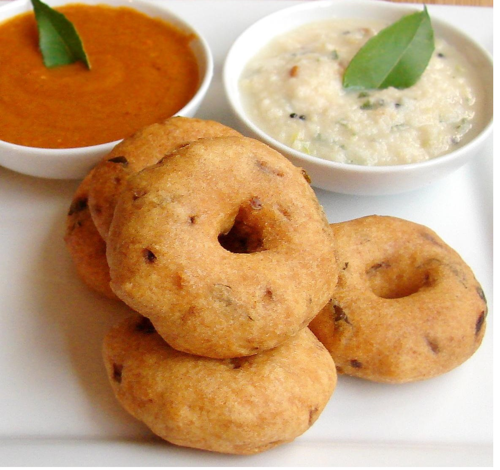
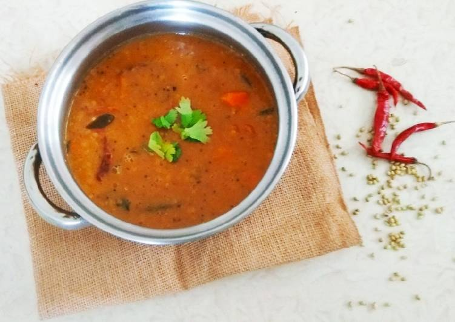

 Idly and vada are quintessential South Indian dishes that have stood the test of time, both in terms of their historical significance and their timeless appeal to taste buds. These dishes are not merely items on a menu; they are culinary traditions that have been passed down through generations, becoming an integral part of South Indian cuisine. The history of idly and vada can be traced back centuries, with references to similar dishes found in ancient Indian texts. However, the idly as we know it today is believed to have originated in present-day Tamil Nadu, where it has been a staple for centuries. The dish is said to have evolved from a steamed rice cake called 'iddarika' mentioned in Sanskrit writings. Over time, idly became a versatile dish with variations in ingredients and preparation methods. Vada, on the other hand, has a history rooted in different regions of South India. Often referred to as 'medu vada' in the South, it is made from urad dal (black gram) batter and deep-fried to perfection. The term "medu" in Tamil means soft, and the vada lives up to its name by boasting a soft interior encased in a crisp, golden-brown exterior. Both idly and vada are celebrated for their unique flavors and textures. Idly is characterized by its soft, spongy texture, achieved through the fermentation of rice and urad dal batter. The mild taste of idly serves as a perfect canvas for various accompaniments like coconut chutney and tangy sambar.
Mallige Idly Recipe

Ingredients Required
Idli rice (2 cups)
Black gram (urad dal) (3/4 cup)
Beaten rice, thick variety (poha) (2 tbsp)
Fenugreek seeds (methi) (1 tbsp)
Salt (to taste)
Instructions
Soak rice, poha, dal and methi seeds in two separate containers for 3-4 hrs.
Grind urad dal and methi seeds first, until satiny smooth.
Next, grind rice and poha till slightly coarse.
Mix the dal, methi, rice and poha together along with salt and pour into a taller container that allows space for the batter to rise.
Allow it to ferment for 12-15 hrs.
Steam the batter in greased idli moulds for 10-12 mins.
Serve with udupi sambar and coconut chutney.
Vada Recipe

Ingredients Required
Urad dal (1 cup)
Rice flour (chawal ka atta) (2 tbsp)
Green chilli (hari mirchi), cut in pieces (1)
Ginger (adrak) (1-inch piece)
Fresh coconut (nariyal), grated (2 tbsp)
Coriander leaves (hara dhania), chopped (2 tbsp)
Curry leaves (kadipatta), chopped (8-10)
Oil ( for deep frying)
Salt (to taste)
Instructions
Soak urad dal for not more than 2 hours in water.
Grind the dal to a thick paste along with green chillies and ginger, using little or no water.
Add rice flour, salt, coconut, coriander leaves and curry leaves to the batter, mix well.
Heat oil in a kadhai.
Shape a spoonful of batter with your hands into a small lemon-sized peda (ball).
Deep fry the vadas on medium flame until golden brown.
Serve with chutney and sambar.
Udupi Sambar Recipe

Ingredients Required
Pre-cooked veggies of choice (1 cup)
Tuvar dal (split pigeon pea) (3/4 cup)
Water (600 ml)
Imli (tamarind) juice (2 tsp)
MTR Haldi/Turmeric Powder (1/2 tsp)
MTR Sambar Powder (1 tbsp)
Grated coconut (1/2 tbsp)
Gud (jaggery) (2 tsp)
Salt (To taste )
Oil (1/2 tsp)
For tempering (1 tsp)
Mustard (sarson) (4)
Curry leaves (kadipatta) (1 tbsp)
Instructions
In a deep pan, add the water, dal, MTR Haldi/Turmeric Powder and oil. Stir and bring the mixture to a boil on a high flame. Then, lower the flame to medium and cook till the dal is done.
Meanwhile, get the sambar paste ready. In a mixie, add MTR Sambar Powder, coconut, gud, a little water and blend well to form a fine paste.
Now, add this paste to the cooked dal and stir to combine on a medium flame.
Add the pre-cooked veggies of choice (onions, tomatoes, lauki, pumpkin). Then add the imli juice. Mix well.
Season with salt and let the dal cook for another 5 mins.
Make the tadka separately. In a pan, heat oil on a high flame. Add sarson and let it splutter, then add kadipatta.
Take off the flame and pour immediately on the sambar. Stir to mix well.
Garnish with hara dhania and serve hot with idli, dosa or steamed rice.
Chutney Recipe
Ingredients Required
Fresh coconut, grated (1 cup)
Green chillies (hari mirch) (2 to 3)
Ginger (adrak), crushed (1-inch piece)
Tamarind (imli) pulp (2 tsp)
Coriander leaves (hara dhania) (2 tbsp)
Split Bengal gram (chana dal), soaked for a couple of hours (1 tbsp)
Salt (to taste)
Oil (2 tsp)
Mustard seeds (sarson) (1 tsp)
Black gram (urad dal) (1 tsp)
Dry red chillies (sabut lal mirch) (2)
Asafoetida (hing) (a pinch)
Instructions
In a mixer-grinder, toss in all the ingredients (except the ones for tempering), and a little water and grind up a fine paste. Transfer the mix to a bowl.
Heat oil in a pan on a high flame and add the sarson to it. When it begins to splutter, add the urad dal, hing and lal mirch, and fry till the dal turns golden brown.
Take off the flame and immediately add to the coconut paste. Mix well and cover the bowl with a lid. Let it rest for 2 minutes to allow the flavours to seep through.
 South Indian Recipes
South Indian Recipes